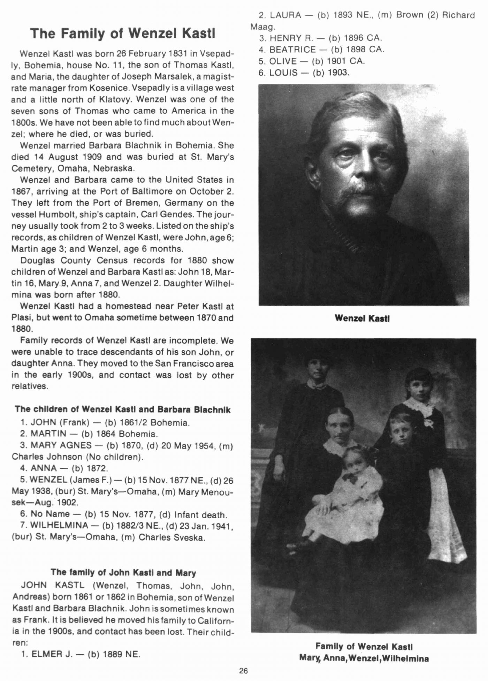
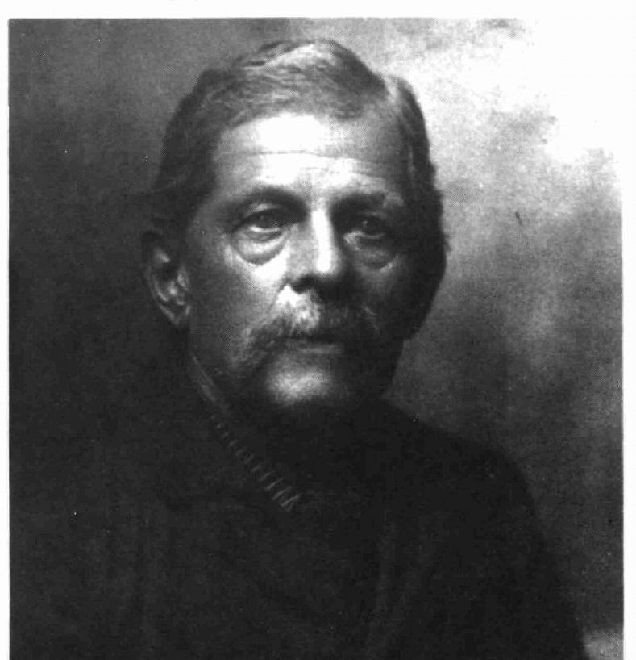

The book · The Family of Wenzel Kastl
Page 26 The Family of Wenzel Kastl


Transcription
The Family of Wenzel Kastl
Wenzel Kastl was born 26 February 1831 in Vsepadly, Bohemia, house No. 11, the son of Thomas Kastl, and Maria, the daughter of Joseph Marsalek, a magistrate manager from Kosenice. Vsepadly is a village west and a little north of Klatovy. Wenzel was one of the seven sons of Thomas who came to America in the 1800s. We have not been able to find much about Wenzel; where he died, or was buried.
Wenzel married Barbara Blachnik in Bohemia. She died 14 August 1909 and was buried at St. Mary's Cemetery, Omaha, Nebraska.
Wenzel and Barbara came to the United States in 1867, arriving at the Port of Baltimore on October 2. They left from the Port of Bremen, Germany on the vessel Humbolt, ship's captain, Carl Gendes. The journey usually took from 2 to 3 weeks. Listed on the ship's records, as children of Wenzel Kastl, were John, age 6; Martin age 3; and Wenzel, age 6 months.
Douglas County Census records for 1880 show children of Wenzel and Barbara Kastl as: John 18, Martin 16, Mary 9, Anna 7, and Wenzel 2. Daughter Wilhelmina was born after 1880.
Wenzel Kastl had a homestead near Peter Kastl at Plasi, but went to Omaha sometime between 1870 and 1880.
Family records of Wenzel Kastl are incomplete. We were unable to trace descendants of his son John, or daughter Anna. They moved to the San Francisco area in the early 1900s, and contact was lost by other relatives.
The children of Wenzel Kastl and Barbara Blachnik
- JOHN (Frank) — (b) 1861/2 Bohemia.
- MARTIN — (b) 1864 Bohemia.
- MARY AGNES — (b) 1870, (d) 20 May 1954, (m) Charles Johnson (No children).
- ANNA — (b) 1872.
- WENZEL (James F.) — (b) 15 Nov. 1877 NE., (d) 26 May 1938, (bur) St. Mary's—Omaha, (m) Mary Menousek—Aug. 1902.
- No Name — (b) 15 Nov. 1877, (d) Infant death.
- WILHELMINA — (b) 1882/3 NE., (d) 23 Jan. 1941, (bur) St. Mary's—Omaha, (m) Charles Sveska.
The family of John Kastl and Mary
JOHN KASTL (Wenzel, Thomas, John, John, Andreas) born 1861 or 1862 in Bohemia, son of Wenzel Kastl and Barbara Blachnik. John is sometimes known as Frank. It is believed he moved his family to California in the 1900s, and contact has been lost. Their children:
- ELMER J. — (b) 1889 NE.
- LAURA — (b) 1893 NE., (m) Brown (2) Richard Maag.
- HENRY R. — (b) 1896 CA.
- BEATRICE — (b) 1898 CA.
- OLIVE — (b) 1901 CA.
- LOUIS — (b) 1903.



People from the line of descent on this page
- Wenzel Kastl b. 1831
- Barbara Blachnik d. 1909
- John Kastl 1861/1862–1936
- Mary
- Martin Kastl b. 1864
- Mary Agnes Kastl 1870–1954
- Anna Kastl b. 1872
- Wenzel Kastl, Jr. 1877–1938
- No Name Kastl b. 1877
- Wilhelmina Kastl 1882/1883–1941
- Elmer J. Kastl b. 1889
- Laura Kastl b. 1893
- Henry R. Kastl b. 1896
- Beatrice Kastl b. 1898
- Olive Kastl b. 1901
- Louis Kastl b. 1903
Transcriber’s notes
New chapter. The child list of John Kastl and Mary begins at the bottom of the left column (1. ELMER J.) and continues at the top of the right column (2. LAURA ... 6. LOUIS). Caption of the family photo is printed on two lines ('Family of Wenzel Kastl' / 'Mary, Anna,Wenzel,Wilhelmina') with spacing as printed; it names four people though five appear. Two children (WENZEL and No Name) are both given (b) 15 Nov. 1877 as printed.